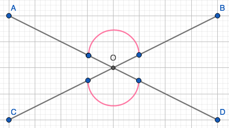

Proving If Two Angles Are Verticle, Then They Are Congruent
School
Mathematics
Proofs
This is a “presentation” style proof for Math-338: Modern College Geometry, and looks at congruence of two vertical angles.
0. Quiz 1
Prove for the following statement using course resources such as our notes and textbooks. Your proof should be your own work, so you should not use any other resources. Record a short presentation or create a slide show explaining your proof. Make sure that you clearly state any definitions, axioms, or theorems that you are using.
Suppose two angles are verticle.
Prove that they are congruent.
1. Definitions
Before hopping into our proof, lets look at a few definitions with some Geogebra images.
1.1 Vertical Angles
In class we defined vertical angles as being “across from each other”.
We can see a simple example of this in Fig. 1 where a pair of pink angles \(\angle AOB\) and \(\angle COD\) are vertical to each other.
Note that \(\angle AOC\) and \(\angle BOD\) are vertical angles as well.
1.2 Congruence
\(x\cong y\) if there is an \(\underline{\text{isometry}}\) that superimposes x onto y.
Isometry is a map that preserves distance and angles
translation (move without turning)
rotation (moving about a fixed point)
reflection (mirror)
combination

In Fig. 2 we see the two triangles are congruent, and would only need a translation isometry or two to map \(\triangle ABC\) onto \(\triangle A_1B_1C_1\).
1.3 Supplementary Angles
We defined supplementary angles as angles whose measurement adds up to \(180^\circ\).
In Fig.3 we can clearly see that \(m\angle AOC\) shown in pink and \(m\angle AOB\) in orange adds to a straight line or \(180^\circ\). We can also see three other pairs of supplementary angles:
\(m\angle AOB+m\angle BOD=180^\circ\)
\(m\angle BOD+m\angle COD=180^\circ\)
\(m\angle COD+m\angle AOC=180^\circ\)
2. Theroems
Included are the axioms and theorems used to prove that two vertical angles are congruent.
2.1 Axioms of Angle Measure
Right angle measures \(90^\circ\)
\(m\angle ABC=m\angle CBA\)
If D is the interior of \(\angle ABC\), then \(m\angle ABC=m\angle ABD+m\angle BDC\)
There exists a unique ray that is the angle bisector of \(\angle ABC\).
2.2 Congruence and Angle Measure theorem
\(\angle ABC\cong \angle DEF \Leftrightarrow m\angle ABC=m\angle DEF\)
If two angles are congruent then the measure of those two angles is the same.
If the measure of two angles is the same, then those two angles are congruent.
(Note that the measure for angles that will be used on the proof will be in degrees. )
2.3 Supplementary Interior Angle Theorem
If two lines are parallel then the supplementary interior angles add to \(180^\circ\).

In Fig. 4 the supplementary interior angles \(\angle AEF\) and \(\angle CFE\) are shown in red and add up to \(180^\circ\).
3. Proof
To prove that two vertical angles are congruent, we need to prove two things :
\(\angle AOB\cong \angle COD\Rightarrow m\angle AOB = m\angle COD\)
\(m\angle AOB = m\angle COD\Rightarrow \angle AOB\cong \angle COD\)
\(\underline{\text{Proof}}\):
- \(\angle AOB\cong \angle COD\Rightarrow m\angle AOB = m\angle COD\)
Suppose \(\angle AOB\cong \angle COD\).
Then there is an isometry that superimposes \(\angle AOB\) onto \(\angle COD\).
Let \(f\) be that isometry : \(f(\angle AOB)=\angle COD\).
Isometries preserve angle.
The angle measure of \(f(\angle AOB)\) equals the angle measure of \(\angle COD\).
So by substitution \(m\angle AOB=m\angle COD\).
- \(m\angle AOB = m\angle COD\Rightarrow \angle AOB\cong \angle COD\)
Suppose \(m\angle AOB = m\angle COD\).
Since by definition of vertical angles, \(\angle AOB\) and \(\angle COD\) are across from each other, there is a reflection, \(f(m\angle AOB)\) about the origin (O).
We also know that there are four pairs of supplementary angles, two of which are:
\(m\angle AOB+m\angle BOD=180^\circ\)
\(m\angle BOD+m\angle COD=180^\circ\)
So, \(m\angle AOB+m\angle BOD=m\angle BOD+m\angle COD\).
And if we subtract \(m\angle BOD\) from both sides we get, \(m\angle AOB=m\angle COD\).
It would then make sense that \(f(O)=O\), \(f(A)=C\), and \(f(B)=D\).
Then by definition of reflection \(f(m\angle AOB)=m\angle COD\).
Therefore by the Congruence and Angle measure theorem \(\angle AOB\cong \angle COD\).
\(\square\)